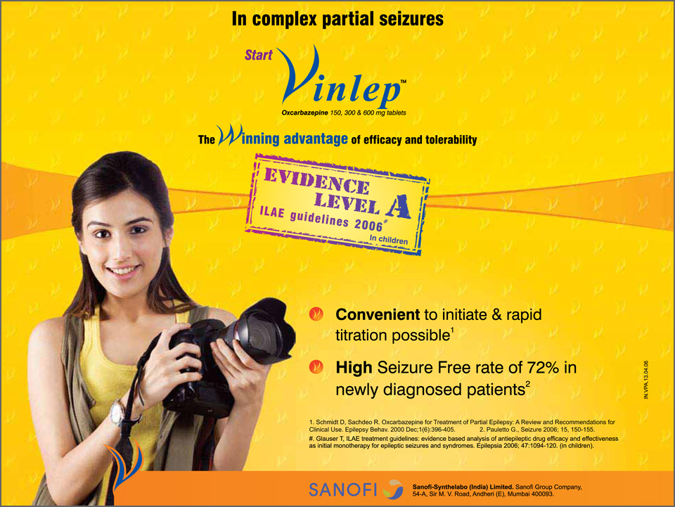

Oxcarbazepine: A valuable treatment option for partial-onset seizures in children
by medeka healthcare on october 01, 2013
- Friedman MJ, Sharieff GQ. Seizures in Children. Pediatr Clin N Am. 2006;53:257–77.
- Arya R, Glauser TA. Pharmacotherapy of focal epilepsy in children: A systematic review of approved agents. CNS Drugs. 2013;27(4):273–86.
- Kalis MM, Huff NA. Oxcarbazepine, an antiepileptic agent. Clin Ther. 2001;23(5):680–700.
- Schmidt D, Elger CE. What is the evidence that oxcarbazepine and carbamazepine are distinctly different antiepileptic drugs? Epilepsy Behav,2004;5(5):627–35.
- Beydoun A. Safety and efficacy of oxcarbazepine: Results of randomized, double-blind trials. Pharmacotherapy. 2000;20(8 Pt 2):152S–158S.
- Belousova ED, Mukhin KIu, Ermolenko NA, et al. Efficacy and safety of the monotherapy with trileptal (oxcarbazepine) in children and adolescents [Article in Russian]. Zh Nevrol Psikhiatr Im S S Korsakova. 2010;110(5 Pt 1):45–50.
- Eun SH, Kim HD, Chung HJ, et al. A multicenter trial of oxcarbazepine oral suspension monotherapy in children newly diagnosed with partial seizures: A clinical and cognitive evaluation. Seizure. 2012;21(9):679–84.
- Piña-Garza JE, Espinoza R, Nordli D, et al. Oxcarbazepine adjunctive therapy in infants and young children with partial seizures. Neurology. 2005;65(9):1370–5.
- Kothare SV, Khurana DS, Mostofi N, et al. Oxcarbazepine monotherapy in children and adolescents: A single-center clinical experience. Pediatr Neurol. 2006;35(4):235–9.
- Northam RS, Hernandez AW, Litzinger MJ, et al. Oxcarbazepine in infants and young children with partial seizures. Pediatr Neurol. 2005;33(5):337–44.
- Sachdeo RC, Gates JR, Bazil CW, et al. Improved quality of life in patients with partial seizures after conversion to oxcarbazepine monotherapy. Epilepsy Behav. 2006;9(3):457–63.
- Donati F, Gobbi G, Campistol J, et al. The cognitive effects of oxcarbazepine versus carbamazepine or valproate in newly diagnosed children with partial seizures. Seizure. 2007;16(8):670–9.
- Naik N, Gawai A. Efficacy, safety and tolerability of Trioptal® (oxcarbazepine) in children and adolescents with newly diagnosed partial seizures or generalized tonic-clonic seizures: Results of a 6 months, prospective, open-label, multicentre, non-comparative, observational post-marketing surveillance study. Indian medical gazette- August 2012. Available on http://medind.nic.in/ice/t12/i8/icet12i8p324.pdf. Accessed on July 22nd, 2013.
- 

Contents
- Initial monotherapy with levetiracetam fails more frequently than monotherapy with valproate or oxcarbazepine:An enlightening evidence
- Sodium valproate:A gold standard for the treatment of childhood epilepsy
- Superior efficacy of sodium valproate IV reported in acute seizures and status epilepticus
- Clobazam: An effective long-term treatment option for Lennox-Gastaut syndrome
- Hospital coverage:Krishna Institute of Medical Sciences
- Oxcarbazepine:A valuable treatment option for partial-onset seizures in children
- Pregabalin and methylcobalamin combination for neuropathic pain:The Indian scenario
- Important aspects of epilepsy management:during pregnancy
- Neurology News
- Neurology Quiz
News Digest

ECG should be considered in patients with refractory epilepsy
Analysis of electrocardiogram (ECG) monitoring in patients with refractory epilepsy revealed significant differences in heart rate between ictal and pre-ictal states, between ictal and post-ictal states, and between pre- and post-ictal states. Hence, ECG might be helpful to detect serious cardiac abnormalities in patients with refractory epilepsy.
J Res Med Sci. 2013;18(Suppl 1):S32–4.

Use of gabapentin in pregnancy is not associated with increased risk of major malformations
A prospective study of pregnancy outcomes in 223 pregnant women who were exposed to gabapentin and 223 pregnant women who were unexposed to gabapentin reported that gabapentin use in pregnancy was not associated with increased risk for major malformations.
Epilepsy Behav. 2013;26(1):109–13.

A portable automatic device for the detection of generalized tonicclonic seizures
Increased S100B protein levels in cerebrospinal fluid may be associated with the neuronal damage following central nervous infections.
Epilepsia. 2013;54(4):e58–61.
Updates